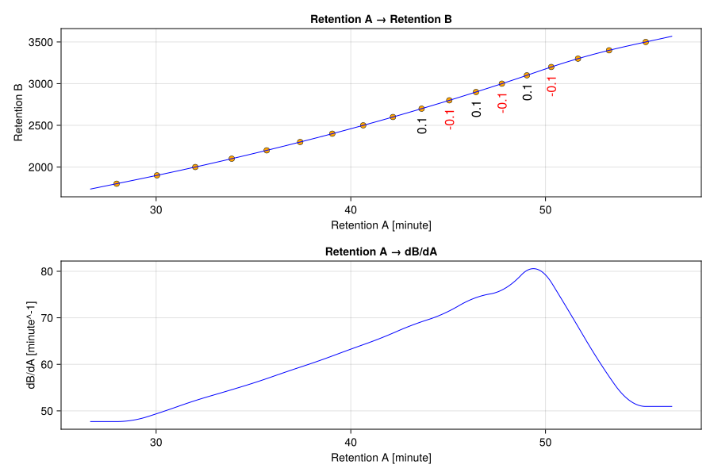
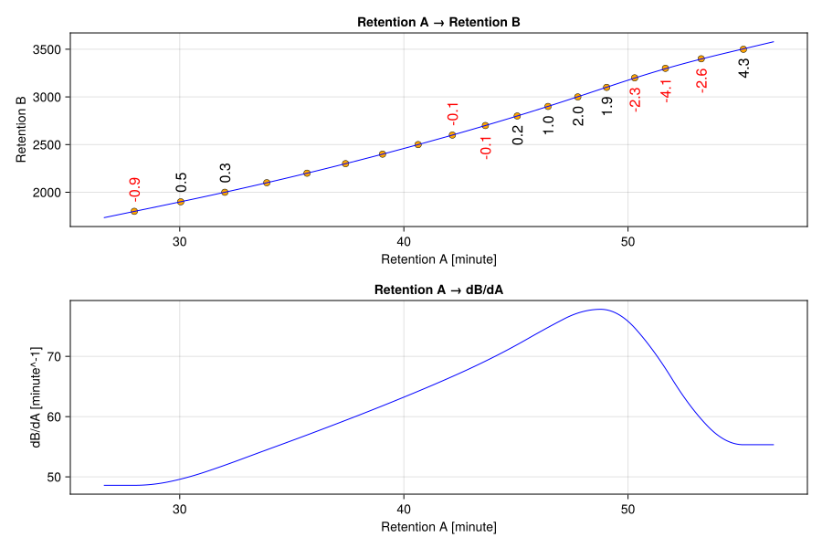

Retention mapping workflow
This page shows a complete retention-mapping workflow using one fitted mapper throughout. The reference pages describe the individual APIs in more detail.
Fitting a mapper
Fitting a mapper requires two vectors of equal length, with at least three points. One vector contains the potentially unitful retentions in domain A, for example retention times. The second vector contains the retentions in domain B. For alkane RT -> RI calibration, domain B is the Kováts retention index, which is dimensionless.
For GC-MS n-alkane standards, these pairs usually do not need to be entered manually: JuChrom can infer the ladder with findalkanes and return an AlkaneSeriesResult. See Alkane Series Finding for the ladder-detection details.
using JuChrom
using JuChrom.ChemStationMSLoader
# Load and preprocess an example n-alkane standard run
file = joinpath(JuChrom.agilent, "C7-C40_ChemStationMS.D", "data.ms")
mss = load(ChemStationMS(file; mode=:ms))
tmss = retentiontrim(mss; start=4.1u"minute", stop=29.7u"minute")
btmss = binmzvalues(tmss)
msm = mscanmatrix(btmss)
nmsm = dwellnormalize(msm)
asr = findalkanes(nmsm)
asr.success || error("Failed to find a suitable ladder: $(asr.status)")
mapper = fitmap(asr)RetentionMapper with 28 calibration points
├─ Domain A (input):
│ ├─ Range: 252004.395291253633331507 to 1757220.505859049037098885 (ms)
│ └─ Type: Float64
├─ Domain B (output):
│ ├─ Range: 900.0 to 3600.0 (unitless)
│ └─ Type: Float64
├─ Spline:
│ ├─ Order: 4 (cubic)
│ ├─ Knots: 28
│ └─ Coefficients: 28
└─ Fit quality:
├─ Min residual: 0.002
├─ Avg residual: 0.110
└─ Max residual: 0.943
This direct path is the usual workflow. asr.success is true only when the default calibration-point selection yields at least three mapper-ready anchors. If it is false, inspect asr.status and the ladder diagnostics before fitting; common causes are too few accepted ladder steps, failed or ambiguous ladder detection, or anchor points that need manual curation.
Only extract the calibration list when you want to inspect or curate it, for example to remove a suspect step or add a manually confirmed step while keeping the original AlkaneSeriesResult as the audit trail.
detected_points = alkaneladdercalibrationpoints(asr)
detected_C27 = only(filter(point -> point.ladderstep == 27, detected_points))
manual_C27 = AlkaneLadderCalibrationPoint(
ladderstep=27,
retention=detected_C27.retention, # replace by the reviewed apex value
retentionunit=detected_C27.retentionunit, # unit of domain A; may be `nothing`
retentionindex=2700.0, # domain B: unitless Kováts RI
source=:manual,
)
points = alkaneladdercalibrationpoints(asr; exclude=[27], extra=[manual_C27])
mapper = fitmap(points)RetentionMapper with 28 calibration points
├─ Domain A (input):
│ ├─ Range: 252004.395291253633331507 to 1757220.505859049037098885 (ms)
│ └─ Type: Float64
├─ Domain B (output):
│ ├─ Range: 900.0 to 3600.0 (unitless)
│ └─ Type: Float64
├─ Spline:
│ ├─ Order: 4 (cubic)
│ ├─ Knots: 28
│ └─ Coefficients: 28
└─ Fit quality:
├─ Min residual: 0.002
├─ Avg residual: 0.110
└─ Max residual: 0.943
AlkaneLadderCalibrationPoint is specific to alkane RT -> RI calibration, so the target coordinate is stored as the unitless field retentionindex; there is no separate unit for domain B. For a different mapping where domain B has a physical unit, use the general fitmap call with two vectors instead. Manual points default to goodforcalibration=true, meaning that the point is intended as a trusted mapper anchor. If a point should not be fitted, leave it out of the curated list passed to fitmap.
If you need the coordinates as ordinary vectors, extract them from the calibration points. This is mostly useful for reporting, plotting, or custom edits outside the AlkaneLadderCalibrationPoint interface; otherwise pass asr or points directly to fitmap.
ordered = sort(points; by = point -> point.retention)
retention_values = [point.retention for point in ordered]
retention_unit = first(ordered).retentionunit
retention_times = isnothing(retention_unit) ?
retention_values :
retention_values .* retention_unit
kovats_indices = [point.retentionindex for point in ordered]
mapper = fitmap(retention_times, kovats_indices)The extracted vectors must still satisfy the usual mapper requirements: both coordinate vectors need at least three values, the retention coordinates and retention indices must be strictly increasing after sorting by retention, and all retention coordinates must share the same unit. If a curated list violates these constraints, remove or replace the problematic anchors before fitting.
To keep this workflow self-contained, the remaining examples use explicit coordinates. In this example, domain A contains retention times and domain B contains Kováts retention indices.
using JuChrom
using CairoMakie
retention_times = [
27.972, 30.043, 32.011, 33.884, 35.679, 37.398, 39.049, 40.636, 42.164,
43.636, 45.058, 46.431, 47.759, 49.046, 50.296, 51.669, 53.266, 55.149,
]u"minute"
kovats_indices = [
1800.0, 1900.0, 2000.0, 2100.0, 2200.0, 2300.0, 2400.0, 2500.0, 2600.0,
2700.0, 2800.0, 2900.0, 3000.0, 3100.0, 3200.0, 3300.0, 3400.0, 3500.0,
]
mapper = fitmap(retention_times, kovats_indices)RetentionMapper with 18 calibration points
├─ Domain A (input):
│ ├─ Range: 27.972 to 55.149 (minute)
│ └─ Type: Float64
├─ Domain B (output):
│ ├─ Range: 1800.0 to 3500.0 (unitless)
│ └─ Type: Float64
├─ Spline:
│ ├─ Order: 4 (cubic)
│ ├─ Knots: 18
│ └─ Coefficients: 18
└─ Fit quality:
├─ Min residual: 0.000
├─ Avg residual: 0.041
└─ Max residual: 0.146
The printed RetentionMapper summary provides a compact overview of the fitted anchor range and units. The default λ=3e-9 is tuned for normalized RT -> RI calibration and is intended to avoid boundary-of-monotonicity wiggles.
Diagnostic plotting
Plot the forward map, its derivative, and the residuals to check whether the fitted curve tracks the anchors without adding implausible oscillation.
fig = plot(mapper; size=(900, 600))
save("retention_mapping_workflow.svg", fig)
The black and red numbers at some anchor points show how much the fitted mapping departs from those anchors. Visible oscillation in the derivative can indicate that a larger λ is appropriate.
Fit a smoother mapper with stronger regularization and compare the diagnostics.
mapper_smooth = fitmap(retention_times, kovats_indices, λ=1e-6)
fig = plot(mapper_smooth; size=(900, 600))
save("retention_mapping_workflow_smooth.svg", fig)
The smoother fit deviates more from the anchor points but suppresses derivative wiggles. Whether that is desirable depends on whether the anchor deviations reflect measurement noise or real chromatographic structure.
Applying the mapper
Use applymap to map retention times to retention indices.
ri = applymap(mapper, 41.5u"minute")2556.066516072286Broadcast over vectors with dot syntax.
rts = [10, 29.3, 35.0]u"minute"
ris = applymap.(mapper, rts)3-element Vector{Float64}:
942.7339107189193
1863.6671120732976
2161.6684623686024Values outside the anchor domain are linearly extrapolated using the slope at the nearest boundary. Set warn=true during analysis when extrapolation should be surfaced.
ri_extrapolated = applymap(mapper, 10u"minute"; warn=true)942.7339107189193Use invmap to map from retention index back to retention time.
ris = [1853.2, 3137.3, 3501.0]
rts = invmap.(mapper, ris)3-element Vector{Quantity{Float64, 𝐓, Unitful.FreeUnits{(minute,), 𝐓, nothing}}}:
29.08338971521236 minute
49.50773754720443 minute
55.16825583879084 minuteFor direct intensity correction, evaluate the local derivative. If ri = f(t), then d(ri)/dt is the local axis-stretch factor; area-preserving intensity transforms divide the intensity by that factor.
scantimes = [1802.5, 1803.0, 1803.5]u"s"
intensities = [1000, 4000, 3500] / 0.5u"s"
dridt = derivmap.(mapper, scantimes, rA_unit=u"s")
ints_transformed = intensities ./ dridt3-element Vector{Float64}:
2428.894177868003
9713.318148504319
8497.17694427481For MassScanMatrix and VarianceMassScanMatrix, applymap applies the Jacobian correction and updates intensity and variance units automatically.
Persisting mappers
When JLD2 is loaded, JuChrom's JLD2 extension can store and restore RetentionMapper objects.
using JLD2
save_object("retention_mapper.jld2", mapper)
mapper_loaded = load_object("retention_mapper.jld2")
jldsave("retention_mappers.jld2"; mapper, mapper_smooth)
mapper_reloaded = JLD2.load("retention_mappers.jld2", "mapper")
mapper_smooth_loaded = JLD2.load("retention_mappers.jld2", "mapper_smooth")
(mapper_loaded isa RetentionMapper, mapper_reloaded isa RetentionMapper,
mapper_smooth_loaded isa RetentionMapper)(true, true, true)For API details, see Fitting maps, Diagnostic plots, Applying maps, and Mapper containers.